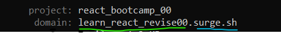
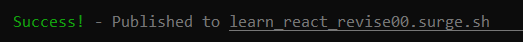
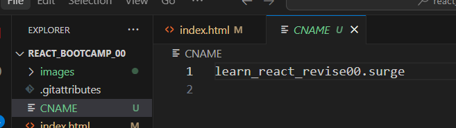

This is revision of classes
A git repo is made repo Name: react_bootcamp_00
repo link:
index.html file made and pushed on github
surge.sh is a hosting where we can host statict websites.
before installing surge install node.js
To check if node.js is installed
node -v
node --version
node
npm install --global surge
Deploy project or file on surge
surge "project/file-directory"Now a custumized domain name appears.
You can edit initial part of the domain
After project deployed:
This page is deployed on: learn_react_revise00.surge.sh
More surge instructions: surge guide
If we make any change in project in local system it wont be updated on the server.
If you open the link it will show previous page which was deployed.
There are two methods:
Make changes then in command-line code:
surge --domain learn_react_revise00.surge.sh
make a CNAME file save the domain name there.
echo "doamin-name" > CNAME
Here
echo learn_react_revise00.surge.sh > CNAME
We get a CNAME file
Now each time after update just type surge command to deploy